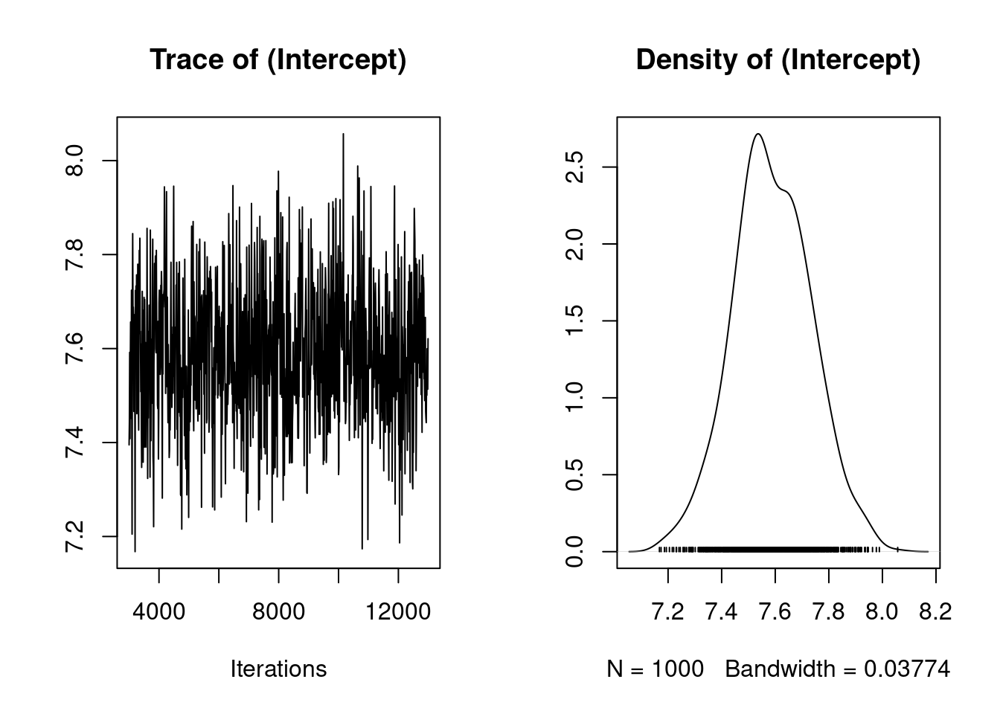
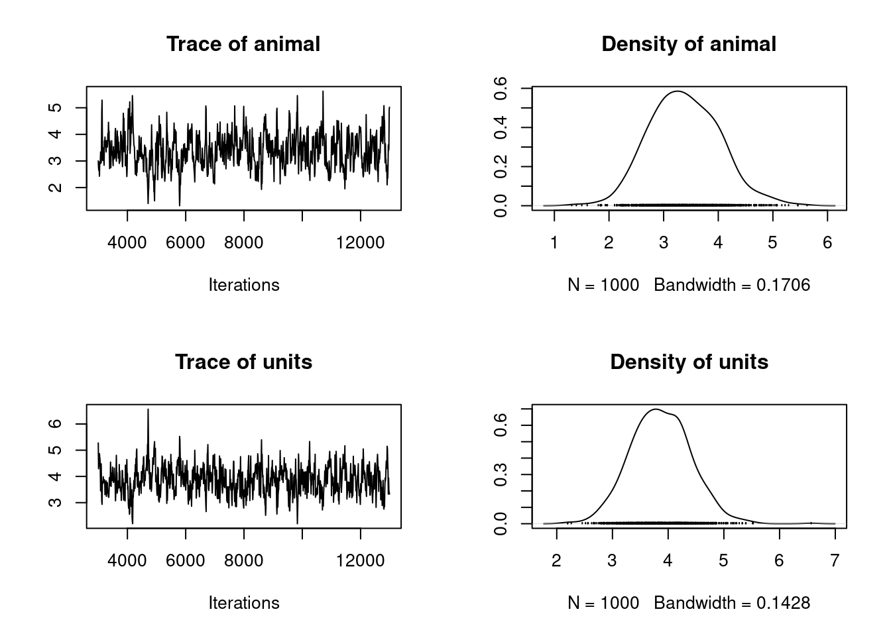
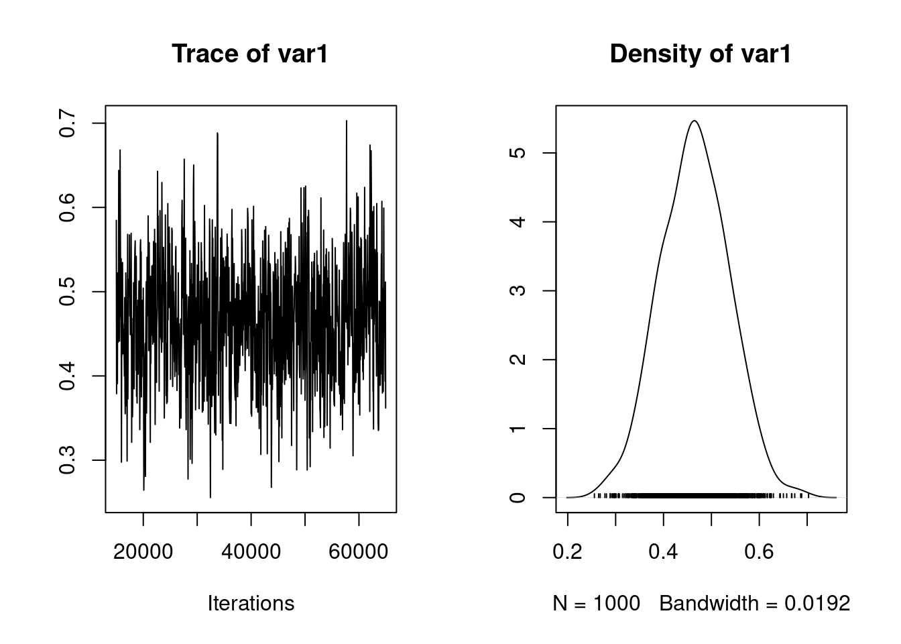
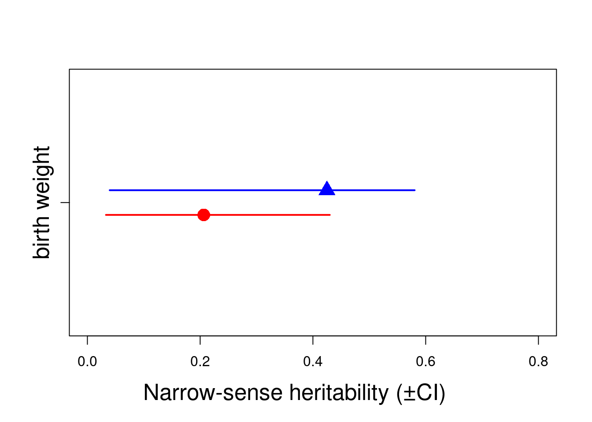

library(MCMCglmm)Loading required package: MatrixLoading required package: codaLoading required package: apeFirst load MCMCglmm:
library(MCMCglmm)Loading required package: MatrixLoading required package: codaLoading required package: apeThe first model we will fit is a simple animal model with no fixed effects, and only an ‘animal’ random effect relating individuals to their additive genetic values through the pedigree.
First we are going to define the priors. In a way we might want to avoid using priors, because we would like all of the information in our analysis to come from our data. By default MCMCglmm uses improper priors, but this can cause inferential and numerical problems. We will specify priors for the animal effect and the residual variance using the following code:
A prior allowed the model to fit different variance structures. With the unique random effect “animal”, we partitioned the phenotypic variance into two distinct variances matrices G (additive genetic) and R (residual). This prior specification is the simplistic one and often used because it was believed to be relatively uninformative, and is equivalent to an inverse-gamma prior with shape and scale equal to 0.001. In many cases it is relatively uninformative but when the posterior distribution for the variances has support close to zero it can behave poorly. Parameter expanded priors (See Chapter 8 of the MCMCglmm CourseNotes, available from CRAN) are gaining in popularity due to their better behaviour but for the purposes of this tutorial we will stick with the inverse-gamma prior.
We have told MCMCglmm to pay little heed to our prior expectation (V) by specifying a small degree of belief parameter (nu) of 0.002. Since this is a univariate analysis, the priors are matrix of order 1 and thus nu>0 is the smallest degree of belief that provides what is known as a ‘proper’ prior, avoiding numerical problems. In fact, there is a lot of information in the data regarding the marginal distributions of the parameters, and MCMCglmm will run most of the models that we suggest in these tutorials without priors. However, this is poor practice, but we will therefore use this simple priors throughout these tutorials. We can now fit an animal model. The model to decompose variation in birth weight into genetic and residual effects is as follows:
The lower case “animal” is a can be a special word for MCMCglmm. If a pedigree argument is provided then MCMCglmm will recognize the term animal as the term to use to estimate additive genetic variance. When the argument pedigree is not provided then the word animal is not different than any other variable. However, instead of providing a pedigree argument to the call to MCMCglmm function, it is much more flexible to use the ginv argument to specify the random effect that must be linked to the pedigree (with the inverse relatedness matrix). We thus first estimate the inverse relatedness matrix using inverseA() then fit the animal model.
Ainv <- inverseA(gryphonped)$Ainv
model1.1 <- MCMCglmm(bwt ~ 1,
random = ~animal, ginv = list(animal = Ainv),
data = gryphon, prior = prior1.1
)
MCMC iteration = 0
MCMC iteration = 1000
MCMC iteration = 2000
MCMC iteration = 3000
MCMC iteration = 4000
MCMC iteration = 5000
MCMC iteration = 6000
MCMC iteration = 7000
MCMC iteration = 8000
MCMC iteration = 9000
MCMC iteration = 10000
MCMC iteration = 11000
MCMC iteration = 12000
MCMC iteration = 13000After typing this code, MCMCglmm will run, taking about 20 seconds on a modern desktop computer. The progress of the run will be printed to the screen. Also, note the warning message will be printed at the end of the run. This is natural too. In order for the MCMC algorithm to work, MCMCglmm must keep track of effects associated with unmeasured individuals appearing in the pedigree. This will not affect the answers, but when many unmeasured individuals exist, it can hinder the ability of the algorithm to explore the parameter space (more on this, and a solution, later). Lets have a look at the MCMCglmm outputs. First we will evaluate how confident we can be that MCMCglmm found good answers. By entering
plot(model1.1$Sol)
in the console, we get Figure 2.2. The plot on the left shows a time series of the values of 1000 samples of the posterior distribution of the the model intercept (mean birth weight). The plot on the right shows the same data as a distribution. Complicated statistical methods for estimating population means are of course of little interest; rather, we are examining these outputs to check that MCMCglmm’s algorithms worked well for our data and for this model. The important point here is that a consistent amount of variation around a largely unchanging mean value of the intercept was obtained (which give this fluctuating trace concentrated around the mean), and the posterior distribution of the intercept appears to be valid. More rigorous means of evaluation the independence of the samples in the posterior distribution (evaluating autocorrelation) are discussed in the MCMCglmm CourseNotes, available from CRAN. Note that your output for model 1.1 may not be identical to this due to Monte Carlo (random number) error. So every times, you run the model, you will get similar but slightly different results.
The posterior distributions of the the variance components are generally of more interest to animal model users. We can view plots of the posterior distribution for the variance components for model 1.1 by
plot(model1.1$VCV)
which generates Figure 2.3. Here we see distributions of the estimates of the additive genetic (animal) and residual (units) effects. These samples contain some autocorrelation, i.e., trends are apparent in the left-hand plot. We can deal with this easily.
We will simply re-run the model for a longer number of iterations, and sample the chain less frequently. So far we have been running MCMCglmm with its default values. These defaults are a total run length of 13000 iterations, the first 3000 of which are discarded as a ‘burn-in’ period to make sure that the converges to the part of the parameter space where the maximum likelihood exists. The remaining 10000 iterations are sampled (estimates retained) every 10 iterations (the thinning interval). Because the values in the left-hand plots in figure 2.2 to appear to have different values at the beginning of the run, we might suspect that a longer burn-in period might be required. We can reduce the autocorrelation by lengthening the rest of the run and sampling the chain less frequently. The following code runs the same model 1.1, but is likely to produce better samples of the posterior distributions. This model should take about two minutes to analyze.
Notes that we have now included the argument verbose=FALSE in the MCMCglmm call. We will continue this throughout the tutorial so that more complete screen outputs can be included in this document without using too much space.Note that the autocorrelation is much reduced. A more compact way to evaluate the validity of the posterior distributions is to calculate autocorrelation among samples, as follows:
autocorr.diag(model1.1$VCV) animal units
Lag 0 1.0000000000 1.000000000
Lag 50 0.1723371074 0.136480466
Lag 250 -0.0372623733 -0.040354498
Lag 500 0.0008769229 0.022152642
Lag 2500 0.0095595528 -0.004526327We will consider these levels of autocorrelation acceptable, at least for the purposes of this tutorial. Ideally, all samples of the posterior distribution should be independent, and the autocorrelation for all lag values greater than zero should be near zero. However, in practice this will not strictly be achievable for all analytic scenarios. Certainly the levels of autocorrelation observed here should not be tolerated in any formal analysis. Note that the validity of posterior distributions of any analysis should always be checked; however, for brevity we will not continue to be so consistently diligent throughout the rest of these tutorials. We can now proceed with confidence to recover some more information from these samples. We can obtain estimates of the additive genetic and residual variance by calculating the modes of the posterior distributions:
posterior.mode(model1.1$VCV) animal units
3.465095 3.626676 We can obtain the Bayesian equivalent of confidence intervals by calculating the the values of the estimates that bound 95% (or any other proportion) of the posterior distributions:
HPDinterval(model1.1$VCV) lower upper
animal 2.252398 4.732031
units 2.785786 4.803362
attr(,"Probability")
[1] 0.95We specified weak priors in this analyses. Now we will check whether or not proper priors would have influenced the results that we obtained. The simplest way to do this is to re-run the model with different priors. In the previous model we specified a prior where the size of genetic and residual variance were similar. Here we construct priors with a larger degree of belief parameter (nu), and we will specify that a large proportion (95%) of the variation is under genetic control (V).Thus, the residual variance contains 05% of the phenotypic variance.
p.var <- var(gryphon$bwt, na.rm = TRUE)
prior1.1.2 <- list(
G = list(G1 = list(V = matrix(p.var * 0.95), nu = 1)),
R = list(V = matrix(p.var * 0.05), nu = 1)
)
model1.1.2 <- MCMCglmm(bwt ~ 1,
random = ~animal, ginv = list(animal = Ainv),
data = gryphon, prior = prior1.1.2, nitt = 65000, thin = 50,
burnin = 15000, verbose = FALSE
)
posterior.mode(model1.1$VCV) animal units
3.465095 3.626676 posterior.mode(model1.1.2$VCV) animal units
3.509940 3.855632 and we can therefore conclude that the difference in the priors has little effect on the outcome of the analysis. This is typical for an analysis where lots of data are available relative to the complexity of the model, but is often not the case. In all cases, it is important to check the effect of priors on conclusions drawn from a model. In addition, you can also specify the prior with previous knowledge or expectation for the variance.
A useful property of Bayesian posterior distributions is that we can apply almost any transformation to these distributions and they will remain valid. This applies to the calculation of heritability. We can obtain an estimate of the heritability by applying the basic formula \(h^2\) =\(V_A /V_P\) to each sample of the posterior distribution:
posterior.heritability1.1 <- model1.1$VCV[, "animal"] /
(model1.1$VCV[, "animal"] + model1.1$VCV[, "units"])
posterior.mode(posterior.heritability1.1) var1
0.4984591 HPDinterval(posterior.heritability1.1, 0.95) lower upper
var1 0.3163028 0.6134676
attr(,"Probability")
[1] 0.95Generate a plot of the posterior distribution of this heritability estimate:
plot(posterior.heritability1.1)
To add effects to a univariate model, we simply modify the fixed effect part of the model specification:
model1.2 <- MCMCglmm(bwt ~ sex,
random = ~animal, ginv = list(animal = Ainv),
data = gryphon, prior = prior1.1,
nitt = 65000, thin = 50, burnin = 15000, verbose = FALSE
)
summary(model1.2)
Iterations = 15001:64951
Thinning interval = 50
Sample size = 1000
DIC: 3714.956
G-structure: ~animal
post.mean l-95% CI u-95% CI eff.samp
animal 3.087 1.993 4.039 802.6
R-structure: ~units
post.mean l-95% CI u-95% CI eff.samp
units 2.943 2.136 3.725 809.6
Location effects: bwt ~ sex
post.mean l-95% CI u-95% CI eff.samp pMCMC
(Intercept) 6.052 5.728 6.384 1000 <0.001 ***
sex2 2.208 1.886 2.532 1000 <0.001 ***
---
Signif. codes: 0 '***' 0.001 '**' 0.01 '*' 0.05 '.' 0.1 ' ' 1We can assess the significance of sex as a fixed effect by examining its posterior distribution. Important notes here, it is important to know how the model names their fixed effect level to call them properly.
posterior.mode(model1.2$Sol[, "sex2"]) var1
2.225847 HPDinterval(model1.2$Sol[, "sex2"], 0.95) lower upper
var1 1.886235 2.531982
attr(,"Probability")
[1] 0.95The posterior distribution of the sex2 term does not overlap zero. Thus, we can infer that sex has an effect on birth weight (presence of a sexual dimorphism) in this model and is a useful addition to the model, for most purposes. It is also worth noting that the variance components have changed slightly:
posterior.mode(model1.2$VCV) animal units
3.221192 3.033608 In fact since sex effects were previously contributing to the residual variance of the model our estimate of \(V_R\) (denoted ’units’ in the output) is now slightly lower than before. This has an important consequence for estimating heritability since if we calculate \(V_P\) as \(V_A +V_R\) then as we include fixed effects we will soak up more residual variance driving \(V_P\) . Assuming that \(V_A\) is more or less unaffected by the fixed effects fitted then as \(V_P\) goes down we expect our estimate of \(h^2\) will go up.
posterior.heritability1.2 <- model1.2$VCV[, "animal"] /
(model1.2$VCV[, "animal"] + model1.2$VCV[, "units"])
posterior.mode(posterior.heritability1.2) var1
0.5040383 HPDinterval(posterior.heritability1.2, 0.95) lower upper
var1 0.3774852 0.6609091
attr(,"Probability")
[1] 0.95Here \(h^2\) has increased slightly from 0.4829 to 0.5079 (again, your values may differ slightly due to Monte Carlo error). Which is the better estimate? It depends on what your question is. The first is an estimate of the proportion of variance in birth weight explained by additive effects, the latter is an estimate of the proportion of variance in birth weight after conditioning on sex that is explained by additive effects. An important piece of advice, each researcher should be consistent in how they name their estimates and always correctly describe which estimates they are using conditional or not (to avoid any confusion).
This is done by simply modifying the model statement in the same way, but requires addition of a prior for the new random effect. For instance, we can fit an effect of birth year:
prior1.3 <- list(
G = list(G1 = list(V = 1, nu = 0.002), G2 = list(V = 1, nu = 0.002)),
R = list(V = 1, nu = 0.002)
)
model1.3 <- MCMCglmm(bwt ~ sex,
random = ~ animal + byear, ginv = list(animal = Ainv),
data = gryphon,
nitt = 65000, thin = 50, burnin = 15000,
prior = prior1.3, verbose = FALSE
)
posterior.mode(model1.3$VCV) animal byear units
2.6773832 0.8529618 2.2066583 Here the variance in birth weight explained by birth year is 0.85. Note that although \(V_A\) has changed somewhat, most of what is now partitioned as a birth year effect was previously partitioned as \(V_R\) . Thus what we have really done here is to partition environmental effects into those arising from year to year differences versus everything else, and we do not really expect much change in \(h^2\) (since now \(h^2 = V_A /(V_A + V_{BY} + V_R )\)). However, we get a somewhat different result if we also add a random effect of mother to test for maternal effects:
prior1.4 <- list(
G = list(
G1 = list(V = 1, nu = 0.002),
G2 = list(V = 1, nu = 0.002),
G3 = list(V = 1, nu = 0.002)
),
R = list(V = 1, nu = 0.002)
)
model1.4 <- MCMCglmm(bwt ~ sex,
random = ~ animal + byear + mother,
ginv = list(animal = Ainv), data = gryphon,
nitt = 65000, thin = 50, burnin = 15000,
prior = prior1.4, verbose = FALSE
)
posterior.mode(model1.4$VCV) animal byear mother units
2.3174927 0.8779722 1.0668757 1.6818388 Here partitioning of significant maternal variance has resulted in a further decrease in \(V_R\) but also a decrease in \(V_A\). The latter is because maternal effects of the sort we simulated (fixed differences between mothers) will have the consequence of increasing similarity among maternal siblings. Consequently they can look very much like an additive genetic effects and if present, but unmodelled, represent a type of ‘common environment effect’ that can - and will- cause upward bias in \(V_A\) and so \(h^2\). Let’s compare the estimates of heritability from each of models 1.2, 1.3 and 1.4:
posterior.heritability1.3 <- model1.3$VCV[, "animal"] /
(model1.3$VCV[, "animal"] + model1.3$VCV[, "byear"] + model1.3$VCV[, "units"])
posterior.heritability1.4 <- model1.4$VCV[, "animal"] /
(model1.4$VCV[, "animal"] + model1.4$VCV[, "byear"] + model1.4$VCV[, "mother"] + model1.4$VCV[, "units"])
posterior.mode(posterior.heritability1.2) var1
0.5040383 posterior.mode(posterior.heritability1.3) var1
0.476195 posterior.mode(posterior.heritability1.4) var1
0.4095803 While testing the significance of fixed effects by evaluating whether or not their posterior distributions overlap zero was simple and valid, this approach does not work for variance components. Variance components are bounded to be positive (given a proper prior), and thus even when a random effect is not meaningful, its posterior distribution will never overlap zero. Model comparisons can be performed using the deviance information criterion (DIC), although it should be noted that the properties of DIC are not well understood and that the DIC may be focused at the wrong level for most people’s intended level of inference - particularly with non-Gaussian responses. The implementation of DIC in MCMCglmm is further described in the reference manual. DIC values are calculated by MCMCglmm by default. Briefly, DIC like other information criteria balance model fit and model complexity simultaneously, and small values of DIC are preferred. We can compare models 1.4 and 1.3, i.e., models with and without the mother term:
model1.3$DIC[1] 3547.695model1.4$DIC[1] 3322.135model 1.4 has a much lower DIC value. Since the maternal effect term is the only difference between the models, we can consider the inclusion of this term statistically justifiable. We should note however that DIC has a large sampling variance and should probably only be calculated based on much longer MCMC runs.
A population can be further fragmented into different groups or categories (such as females and males, juveniles and adults or treated and untreated). Some scientific questions require further and deeper analysis of the variance. To avoid multiple model (one for each group), we can directly partition the variance between groups in a unique model. In addition, by doing so, we can also test if the variance are different between groups.
As example, we can partition the additive genetic variance and residual variance by sex. It is impossible to further partition the other variances but complexity an animal model requires sufficient sample size.
prior1.4.SEX <- list(
G = list(G1 = list(V = diag(2), nu = 1.002), G2 = list(V = 1, nu = 0.002), G3 = list(V = 1, nu = 0.002)),
R = list(V = diag(2), nu = 1.002)
)
model1.4.SEX <- MCMCglmm(bwt ~ sex,
random = ~ idh(sex):animal + byear + mother,
rcov = ~ idh(sex):units,
ginv = list(animal = Ainv), data = gryphon, nitt = 65000, thin = 50, burnin = 15000,
prior = prior1.4.SEX, verbose = FALSE
)
posterior.mode(model1.4.SEX$VCV)sex1.animal sex2.animal byear mother sex1.units sex2.units
0.9321506 2.5795457 0.8189535 1.3158246 2.3144897 1.3666491 posterior.heritability1.4.FEM <- model1.4.SEX$VCV[, "sex1.animal"] /
(model1.4.SEX$VCV[, "sex1.animal"] + model1.4.SEX$VCV[, "byear"] +
model1.4.SEX$VCV[, "mother"] + model1.4.SEX$VCV[, "sex1.units"])
posterior.heritability1.4.MAL <- model1.4.SEX$VCV[, "sex2.animal"] /
(model1.4.SEX$VCV[, "sex2.animal"] + model1.4.SEX$VCV[, "byear"] +
model1.4.SEX$VCV[, "mother"] + model1.4.SEX$VCV[, "sex2.units"])
posterior.mode(posterior.heritability1.4.FEM) var1
0.2268393 HPDinterval(posterior.heritability1.4.FEM, 0.95) lower upper
var1 0.06124262 0.4416593
attr(,"Probability")
[1] 0.95posterior.mode(posterior.heritability1.4.MAL) var1
0.3847509 HPDinterval(posterior.heritability1.4.MAL, 0.95) lower upper
var1 0.0578405 0.6043648
attr(,"Probability")
[1] 0.95Here, we can estimate the heritability for each sex. Both doesn’t overlap with zero, so we can conclude both sexes have significant heritability. However due to their overlaps CIs, we can not conclude the heritability is not significantly different between sexes. An important quote to remember is “A difference in significance is not a significant difference”
h2.sex <- rbind(
cbind(posterior.mode(posterior.heritability1.4.FEM), HPDinterval(posterior.heritability1.4.FEM, 0.95)),
cbind(posterior.mode(posterior.heritability1.4.MAL), HPDinterval(posterior.heritability1.4.MAL, 0.95))
)
plot(c(0.95, 1.05) ~ h2.sex[, 1], xlim = c(0, 0.8), ylim = c(0.5, 1.5), , xlab = "", ylab = "", col = c("red", "blue"), pch = c(16, 17), cex = 2, yaxt = "n")
arrows(y0 = 0.95, x0 = h2.sex[1, 2], y1 = 0.95, x1 = h2.sex[1, 3], code = 3, angle = 90, length = 0, col = c("red"), lwd = 2)
arrows(y0 = 1.05, x0 = h2.sex[2, 2], y1 = 1.05, x1 = h2.sex[2, 3], code = 3, angle = 90, length = 0, col = c("blue"), lwd = 2)
mtext("Narrow-sense heritability (±CI)", side = 1, las = 1, adj = 0.4, line = 3, cex = 1.6)
axis(2, at = 1, labels = c("birth weight"), las = 3, cex.axis = 1.6)
Unfortunately (to our knowledge), it is not possible to alter the variance matricesand refit them within the model.
Some research questions require to estimate the covariance between two random effects within a univariate model.To do so, we can use the argument str. A similar argument or linking.function mm can be used but it will forced the variance of animal and mother to be equal and the covariance to 1. As an example, we fit a model which estimate the covariance between the additive genetic variance and the mother variance. Both variances require to operate on the same level, thus animal and mother require to be associated to the pedigree information.The ginverse list name has to correspond to the first term in the argument or linking.function
prior1.5 <- list(
G = list(G1 = list(V = diag(2), nu = 0.002)),
R = list(V = 1, nu = 0.002)
)
model1.5 <- MCMCglmm(bwt ~ sex,
random = ~ str(animal + mother), ginv = list(animal = Ainv),
rcov = ~ idh(1):units,
data = gryphon, nitt = 65000, thin = 50, burnin = 15000,
prior = prior1.5, verbose = FALSE
)
posterior.mode(model1.5$VCV)